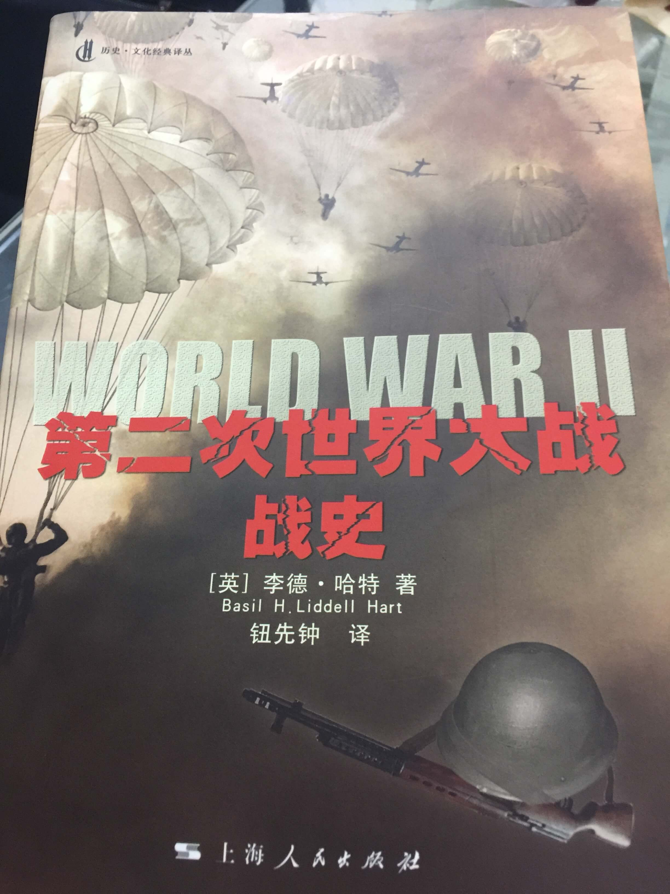

《第二次世界大战战史》观后感
2018-09-01
这篇观后感本应该前几天就完成了，无奈这几天全在加班，昨天还经历了830版本上线。不过，不是很影响，周六的清晨反而更加惬意。
这本书总共677页，没读完过这么厚的书（虽然其中也有一小部分是跳着看的），文章通俗，流畅，按照时间发展和战争发起到高潮到退潮的叙述顺序，基本上是能一口读完的，如果你是历史爱好者。我爸在我看这本书的时候，问读它有什么用？“以铜为镜，可以正衣冠，以古为镜，可以知兴替。”你以为我会这样告诉他吗，no，就比如他不懂读历史的意义，他也不了解这句话的意思。这期间我也看了几部关于二战的电影，《辛德勒的名单》、《穿条纹睡衣的男孩》，《从海底出击》，《朗读者》。以及之前看过的几部经典的电影，《兵临城下》，《美丽人生》，《敦刻尔克》，这些都是豆瓣高分电影，从各个角度去描写战争。战争总是给人带来深思，下面通过李德·哈特的《第二次世界大战战史》来回忆一下二战的故事。
二战爆发在我看来是必定的。一战后德国的失利，签订《凡尔赛条约》，削弱德国实力；以及《朗读者》中女主表现出来的，高傲的日耳曼民族（德国人），是绝不会简单屈服的，正好这时候不可一世的希特勒上位了，给沉寂的德国人带来了希望；法国、英国在经历了第一次世界大战之后，一直保持着以和平为主的容忍态度。战争的开始，从放弃捷克斯洛伐克，到签订《慕尼黑条约》，一步步忍让，增强了希特勒的信心。同时1939年攻击波兰，让以和平为主的西欧国家忍无可忍，这也是二战正式的开端。接着德国开始了对西欧的蹂躏，德发战争中，法国高估了他们骑兵的实力，同时也低谷了敌军坦克的作用，正验证了中国的古话，知己知彼，百战不殆。期间，密码学也高速发展，破译双方通信内容，成了战争重要的一环，前期的德国总能先破解敌方的密文。书中所记，希特勒其实也不是一个过渡膨胀的人，在法国境地轻松击败联军之后，他竟然让坦克部队暂停进攻，也让英国有了敦刻尔克大撤退的机会，让后续英德大战的英国保存了实力。这期间有一个神奇的人物，古德里安，他崇尚坦克代替骑兵发动奇袭（一般坦克进攻都需要配合骑兵或者摩托师部队，过渡深入敌军容易得不到援助），一路从法国南部杀到了法国北部。随即开始了英德大战，英国因为是一个岛国，且德国海军实力不太行，所以不列颠之战就成了持久战。随后德国和意大利开始进攻非洲，损耗了部分部队，对进攻苏联产生了一点影响。进攻苏联完全是希特勒主导的。苏联虽然在进攻前有所防御，但是没想到德国真会发动进攻，所以战争前期节节败退。最终苏联还是通过莫斯科保卫战，以及斯大林格勒战役的反攻，抵御了德国的进攻，当然这多亏了苏联低地和丘陵的地势和寒冷的气候。而且后来美国也因珍珠港事件，介入战争，也加速了德国的失败。
纵观整个战争，德国其实有机会统一西欧，早点占领敦刻尔克，英国说不定就没有实力抵御德国的进攻，也不用两面受敌。如果不把战场蔓延到非洲，说不定就能在冬天之前攻占莫斯科。俄罗斯的冬天简直就是德国的噩梦，上届世界杯冠军直接小组未出现。不过，历史上最大的世界战争也是惨烈的，20亿以上的人口被卷入战争，人员伤亡和经济的损失是无法估计的，以及对犹太人的屠杀，日本对中国侵略，这些暴行我们都不应该忘记，更警醒着我们，身处和平年代的不易。战争也带来了部分好处，促进了航海和航空方面的发展，以及信息学密码学等崛起。

写作时间：
20180901